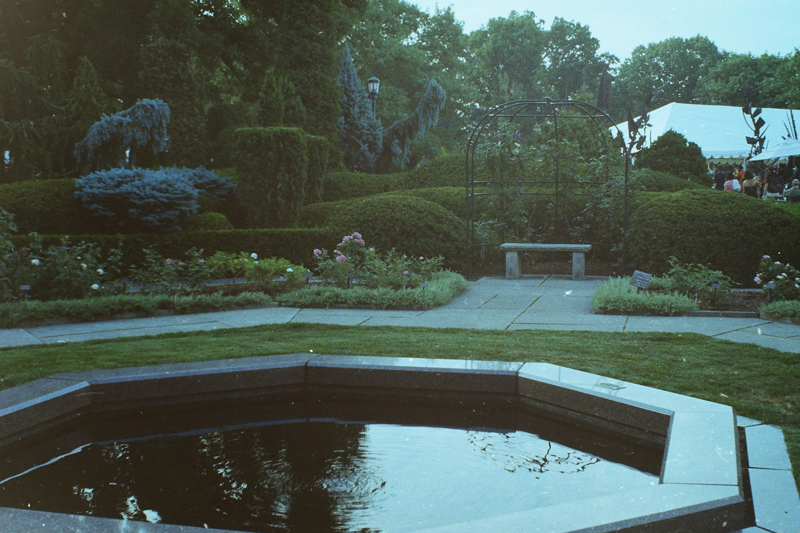

Blog
Summer at Cleveland Botanical Gardens
January 3, 2019
by Benjamin Boczulak
Here is a photo from my archives. It was taken on my Yashica MG-1 rangefinder camera on Kodak Gold 200 film. This camera was manufactured from 1975-1980 and is based on the Yashica Electra 35 body, however, there is no Electra 35 branding on the device. I am pleased with the results of this camera, however many of my compositions came out crooked or poorly framed in some way. I suspect this has to do with the poor design of the rangefinder mechanism, frankly it is too small. Overall, I do enjoy the camera and it has a very classic look to it. However, it can be difficult to find batteries becasue the 5.6V mercury batteries that it requires have been banned due to enviromental concerns. I have a 6V alkaline replacement in mine which works fine, but expect to pay a premium.
Location from Google Maps: